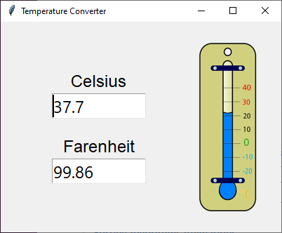

Temperature Converter
What will I make?
An application to convert temperatures between Celsius and Farenheit degrees.
Please read the Guizero documentation about layouts before continuing. This will teach you how to position the widgets on the screen.
The GUI is comprised of a single window () with these widgets:
- a container () with:
- a label () for "Celsius"
- a text field () to input/output the temperature in Celsius degrees (
textbox_celsius)
- a label () for "Farenheit"
- a text field () to input/output the temperature in Farenheit degrees (
textbox_farenheit)
- an image () for the logo

Instructions
- Download and uncompress the starter kit ZIP archive which contains all the resources (eg images) you need and some code to get you started..
- Open the
main.py file in your favourite editor (eg IDLE)..
- Run the program. A window should pop up but nothing will happen when you enter some text or click the buttons. This is because the code is incomplete but you will fix this next..
- Modify
main.py, adding the missing code in the places marked with # TODO. In particular:
-
Implement the
on_change_celsius callback function for when the Celsius text field changes:
- Get the text, convert it to a
float and store it in a variable with celsius = float(textbox_celsius.value).
- Convert the Celsius to Farenheit and update the Farenheit text with
textbox_farenheit.value = celsius_to_farenheit(celsius).
- If no error occurs (ie if a valid Celsius temperature has been entered), set the background color of both text fields to white.
- If an error occurs (ie if an invalid Celsius temperature has been entered), set the background color of both text fields to pink and blank out the Farenheit text field.
Show me
# Callback function for when the Celsius text changes.
def on_change_celsius():
try:
celsius = float(textbox_celsius.value)
textbox_farenheit.value = celsius_to_farenheit(celsius)
textbox_celsius.bg = "white"
textbox_farenheit.bg = "white"
except ValueError:
textbox_farenheit.value = ""
textbox_celsius.bg = "pink"
textbox_farenheit.bg = "pink"
-
Implement the
on_change_farenheit callback function for when the Farenheit text field changes:
- Get the text, convert it to a
float and store it in a variable with farenheit = float(textbox_farenheit.value).
- Convert the Farenheit to Celsius and update the Celsius text with
textbox_celsius.value = farenheit_to_celsius(farenheit).
- If no error occurs (ie if a valid Farenheit temperature has been entered), set the background color of both text fields to white.
- If an error occurs (ie if an invalid Farenheit temperature has been entered), set the background color of both text fields to pink and blank out the Celsius text field.
Show me
# Callback function for when the Farenheit text changes.
def on_change_farenheit():
try:
farenheit = float(textbox_farenheit.value)
textbox_celsius.value = farenheit_to_celsius(farenheit)
textbox_celsius.bg = "white"
textbox_farenheit.bg = "white"
except ValueError:
textbox_celsius.value = ""
textbox_celsius.bg = "pink"
textbox_farenheit.bg = "pink"
-
Implement the
celsius_to_farenheit function to convert from Celsius to Farenheit:
- The formula is
°F = (°C x 9/5) + 32.
Show me
# Function to convert from Celsius to Farenheit.
def celsius_to_farenheit(celsius):
return (celsius * 9 / 5) + 32
-
Implement the
farenheit_to_celsius function to convert from Farenheit to Celsius:
- The formula is
°C = (°F - 32) x 5/9.
Show me
# Function to convert from Farenheit to Celsius.
def farenheit_to_celsius(farenheit):
return (farenheit - 32) * 5 / 9
If you would prefer writing all the Python code by yourself, download and uncompress the resources ZIP archive. It contains all the resources (eg images) but no Python code.
If you would like to see the finished app, download and uncompress the solution ZIP archive. It contains all the resources (eg images) and the full Python code.
What can I try next?
Here are some things you can try to make the app better. They are independent from each other so you can pick just a couple or do them in a different order. If you get stuck, use the Hints button or read the Guizero documentation (see Build an app with Guizero).
And of course you can also use your imagination and change the app as you like!
- Learn how to handle errors to make your programs more robust by reading W3School's Python Try Except and Python Built-in Exceptions.
- Use different units than Celsius and Farenheit. For example you could convert between kilometers and miles.
- The structure of the code will probably not change.
- Replace all the references to temperature/Celsius/Farenheit/etc by the appropriate words (eg distance/kilometers/miles/etc) in:
- the widgets: look for things like
title, text, etc.
- the code: look for things like variable names, function names, etc.
- Change the formulas in the conversion functions.
- Add Kelvin degrees which are a temperature scale used by scientists.
- The formulas to convert between Celsius and Kelvin are
°K = °C + 273.15 and °C = °K - 273.15.
- To convert between Farenheit and Kelvin, you can convert to Celsius as an intermediate step.
- Create a new (with an associated for the label) linked to the
on_change_kelvin callback function.
- Create a new
on_change_kelvin callback function to update the Celsius and Farenheit text fields.
- Modify the
on_change_celsius and on_change_farenheit callback functions to also update the Kelvin text field.